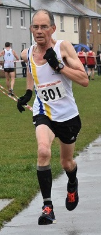

Despite very hot conditions, James Graham set a new M65 Half Marathon club best of 1:34:07 at the Leamington Spa Half Marathon on 1 July. James improved on Richard Pitcairn-Knowles 1999 time by just over a minute and provided the following report:
It's the first time that this race has taken place and I only found out about it when I was watching my niece run in the Stratford upon Avon half earlier this year.
Although the overall organisation seemed good, the race suffered from some teething issues in that the start was delayed by 45 mins due to drivers ignoring the road closures resulting in the runners having to wait at the start in very hot and sunny conditions.
When the race eventually got underway the route took us through some lovely Warwickshire countryside and villages, although it was far from flat and the heat made the hills feel worse than they really were.
Although my time was slower than I had anticipated, considering the conditions, I was pleased with my results.
James was listed in the results as second M55, but RunBritain shows that he was first M60/M65 - and 14th fastest M65 over the distance this year. The event results are here.